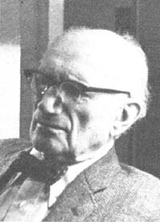

The world in general - and, in particular, every advocate of simpler living, self-sufficiency, dignity for all, and the husbanding of the planet's resources-lost a friend, a mentor, and a champion when Dr. Ralph Borsodi passed away at his home in Exeter, New Hampshire on October 26, 1977.
Dr. Borsodi was born in New York City ( "in either 1886 or '87, 1 don't know myself") and spent the earliest years of his life in booming Manhattan. By 1908, however, he was already personally testing the idea of moving "back to the land". . . and he had fully embraced the now "in" concept of "voluntary simplicity" by 1920.
Dr. Borsodi is chiefly known for his practical and highly successful experiments in self-sufficient living during the 1920's and 30's, and for the books he wrote about those experiments. This Ugly Civilization and Flight From the City remain, perhaps, his most famous works ... and they inspired hundreds of thousands of people to follow his example during the Great Depression.
There was far more to the man than a mere longing to "drop out" of an increasingly complex world, however. Unlike so many of today's would-be back-to-the-landers, Dr. Borsodi spent decades analyzing the ills of modern society and devising remedies for those ailments. He also sharpened his vision into the future so keenly that, as his followers knew, he usually was hard at work solving a problem at least 20 years before lesser men realized the problem even existed.
In 1943, for example, when most economists and politicians were talking about price controls and our "managed" wartime economy, Ralph Borsodi was warning - in a book with the same title-that Inflation Is Coming. It did... it's still with us ... and it shows no sign of going away.
Of course everyone knows that ... now. And while the awareness was slowly seeping into our collective consciousness during the early 70's ... Dr. Borsodi (as might be expected) was already solving the problem on a practical basis by inventing and legally circulating an inflation-proof currency of his own up there in Exeter, New Hampshire.
MOTHER explained the workings of Borsodi's inflation-free currency (the Constant) back in Issue No. 27. And an in-depth interview with Dr. Borsodi was published in MOTHER NO. 26. We feel that the following excerpts from the interview serve as a far better tribute to the' man than any eulogy we might write.
I was introduced to economics by working for my father, who was a publisher and who had connections in the field of advertising. That was my first job - I was just a boy - and while I was there I became interested in the Idea of homesteading.
My father wrote the introduction to A Little Land and a Living. This was a book about farming for self-sufficiency written by Bolton Hall. He was a very distinguished author and the book played an Important part in the back-to-the-land movement that took place during the banking panic of 1907.
In 1920, there was a great housing shortage in New York City and the home we were living in was sold right out from under us. So we left. I moved my family out of New York in 1920 in a deliberate effort to get away from urbanism.
My theory was that it was possible to live more comfortably In the country than in the city. We wanted to experiment with building and making things for ourselves ... to have some security independent of the fluctuations of the business world.
Learn by doing. Practice and reading and observation make up the best of all ways of getting an education. We've forgotten, you see, that at one time most people obtained their training by apprenticeship. Even doctors and lawyers, before we had medical and law schools, learned those professions as an apprentice to an already established M.D. or attorney.
There's all the evidence in the world that the building of cities is one of the worst mistakes that mankind has ever made: For both physical and mental health we've got to be close to Mother Earth.
I think that philosophy, as it's taught in the academic world, is a completely meaningless discipline. Philosophy as a way of living, on the other hand, is just enormously important.
Abraham Lincoln once said that the future of America depends upon teaching people how to make a good living from a small piece of land. Now this is the technology we must study ... how to make a good living not just a Spartan existence, but a good living - on a small piece of land.
I established a School of Living back in Rockland County, New York during the winter of 1934 - 35. Before long about 20 families began coming out regularly from New York City to spend the weekends at this school. How they scraped up the money to get there I don't know.
It was the middle of the depression and those families didn't have much ready cash. So I said to them, "The lots here should cost you a little less than $1,000 but you're not going to have to buy the lots. All you'll have to scrape up is rent, including taxes, of about $5.00 a month." Then I started raising money, mostly by issuing certificates of indebtedness which could be paid off with those rent installments.
What I had done, you see, was create a land trust ... really an economic, banking, and credit institution. We called it the Independence Foundation, Inc. It was a new and ethical way of holding land in trust ... of making low-cost, cooperatively shared credit available to people who wanted to build homesteads in our community. This institution made it possible to provide people access to land without their having to pay cash for the property in the beginning.
Living in the country has been called "the simple life". This is not true. It's much more complex than city life.
City life is the one that's simple. You get a job and earn money and you go to a store and buy what you want and can afford. The decentralist life in the country, on the other hand, is something else again. When you design your own things and make plans about what you're going to produce and really live in a self-sufficient manner, you've got to learn ... you've got to master all sorts of crafts and activities that people in the city know nothing about.
The dissatisfaction with "modern" society in this country is nothing new. We've had it again and again, especially during and after great depressions, since the nation was founded. The unrest usually spawns a "back to the land" movement that catches fire for a while ... and then times get better and we repeat the cycle all over again.
The whole Industrial Age - which began roughly 200 years ago when Adam Smith wrote The Wealth of Nations - is based on false premises. Smith, you see, eulogized the factory system of production as the way to end want in the world. He pointed out that if you make things on a large scale in a factory, you reduce the cost of producing those Items ... and this is perfectly true.
But Adam Smith completely overlooked what factory production does to distribution costs. It pushes them up. Goods cannot be manufactured in a factory unless raw materials and fuel and workers and everything else are brought there. This is a distribution cost. And then, after you've put together whatever you're making in that plant, you've got to ship it out to the people who consume it. That can become expensive too.
Now I've produced everything from tomato crops to suits of clothing which I've handspun on my own homestead and I've kept very careful records of every expense that went into these experiments. And I think the evidence is pretty clear that probably half to two-thirds-and it's nearer two-thirds-of all the things we need for a good living can be produced most economically on a small scale ... either in your own home or in the community where you live.
There's another point that Adam Smith completely overlooked when he wrote The Wealth of Nations: The factory system can only last as long as our irreplaceable resources are cheap and available. Well, those resources are never going to be cheap again and they're going to become increasingly unavailable. We're living in the twilight of industrialism and urbanism.
When you make things for your own use you try to produce the best you can. And when people produce items that are traded face to face, there's a certain human relationship and a pride of craftsmanship that keeps the quality high. But when you just set up machines and run them solely for the purpose of making a profit, you usually begin to exploit the consumer. That's what's happening right now and it's one of the reasons so many people feel cheated by our industrialized system.
You can put a dollar value on milk, but you can't put just a dollar value on it. Because, when you produce your own, it's pure and fresh milk ... unlike the bottled variety which is all processed and pasteurized and treated and, in my opinion, inferior.
So you have your milk. But the cow which produced it also produces manure and, if you have enough manure, you don't need to buy any chemical fertilizer. Also, you've got to consider the value of the calf which that cow has each year.
By the time you add up all the income a farmer can realize from a cow, you'll see that the return on his investment is quite substantial ... provided that he and his family use the milk.
If, on the other hand, the farmer sells the milk at wholesale prices to someone else, then he gets only a little return for it which he must spend at retail prices for the things he wants. The milk is worth the most to him, in other words, when he uses it.
This is an example of the economic law that I discussed in my book, The Distribution Age. It has to do with distribution costs. When you buy milk, you pay very little for the milk itself. Most of what you pay is for the distributing of the product. When you produce your own milk, howeveror your own vegetables-you don't have such costs. This is the story which should be told in the schools of agriculture ... instead of the miseducation that those institutions teach.
As long as the universities - particularly the schools of agriculture - extol the values of urbanism and industrialism, it's like trying to roll a stone uphill to show people the virtues of the self-sufficient life. Every generation, you see, is taught to think of homesteading as something that is past and romantic and best forgotten. So the real battle is not in finding individuals who've got the hardihood, the stariiina, and the ingenuity to make it on their own ... but in getting the educational establishment interested in showing these people how to go about it.
The church used to teach us how to live, but the church has lost its influence. Schools then stepped into the breach and - as I've said - now often deal in misinformation but, as a matter of fact, it's no longer the schools that teach the American people what they want.
We now have an even more persuasive educational institution ramming the goods that factories produce down the throats of our people ... and that educational institution is called advertising.
Now very few individuals think of advertising as the real educator of the American populace, but, over and over again, it teaches us to want all sorts of things which are not good for us ... but which make money for those who control the factories.
The heart of economics, you see, is the satisfaction of wants. So it's just good business to create a want that only your factory can satisfy. But nature doesn't have factories, so it's obvious that the creation of such a demand is probably unnatural ... wrong. And when you encourage people to want the wrong things, you're really creating a pattern of life - a way of living - that you shouldn't.
We have to hold the earth in trust. We can enjoy the fruit of the land or of a natural resource, but the land or the resource itself must be treated as a gift. A man who uses the land is a trustee of that land and he must take care of it so that future generations will find it just as good, just as rich, as when he took possession of it. A trustee is entitled to a return for administering his trust ... but he must never destroy the trust itself.
The moment you lay down this simple moral principle, of course, you make ducks and drakes of our existing method of treating the natural resources of the earth. The history of America is just one gigantic land exploitation ... and very few people realize that this creates exactly the conditions which make individuals - in desperation - turn to socialism and communism.
Have you ever heard of Spengler and his big book, The Decline of the West? Well it made a tremendous sensation when it appeared, because he predicted exactly what is taking place today.
Spengler's thesis is that what every civilization seems to do is to pile up all the wealth and all the health in big cities ... where they finally decay. And then there's a collapse and an overwhelming population decline and the people who are left are forced back to the land.
Now it seems tragic to me that we do not listen to men like Spengler. They've shown us what can happen. We now know ... and, instead of waiting for a crash to drive us to a better way of living, we should use all the wits we've got - all the technology we've got - to develop that sort of living before the coming collapse takes place.
We must develop what a friend of mine calls a "biotechnology" - a life technology - to replace the inorganic technology that we've built. Instead of continuing to plunder our irreplaceable resources - which we won't be able to plunder much longer anyway - we must begin to explore the use of replaceable resources.
Recently, while looking back at the failure of the "youth revolution" of the late 60's and early 70's, former radical leader John Sinclair said, "We didn't know anything. We were de'classe hippies. We had no idea of history. It was all right now. We wanted to create a new economic order starting with us. But can you imagine what would have happened if we had turned the country over to Tom Hayden or Jerry Rubin? They weren't ready. They didn't have any programs.
Well, John... Ralph Borsodi not only had the programs you were looking for 10 years ago... he'd already been putting into practice and living and testing and writing about those programs for at least 60 years before you started trying to find them.
It's too bad that you and Tom Hayden and Jerry Rubin - and all the rest of us- didn't listen more closely to Ralph Borsodi... while he was still here to teachus.
|
 |
|
|